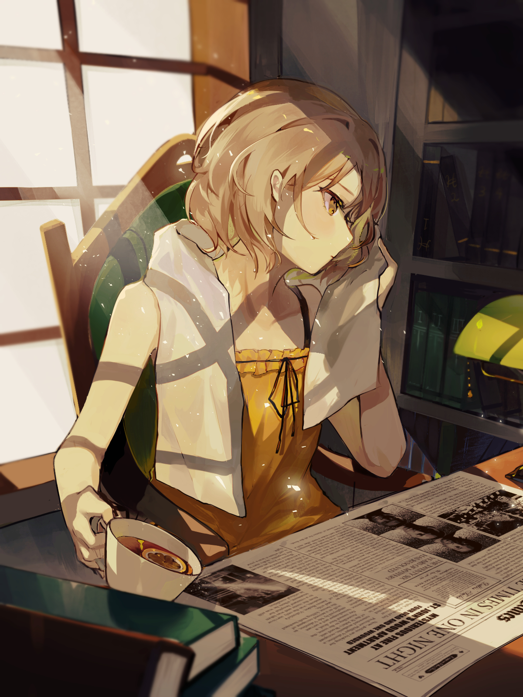
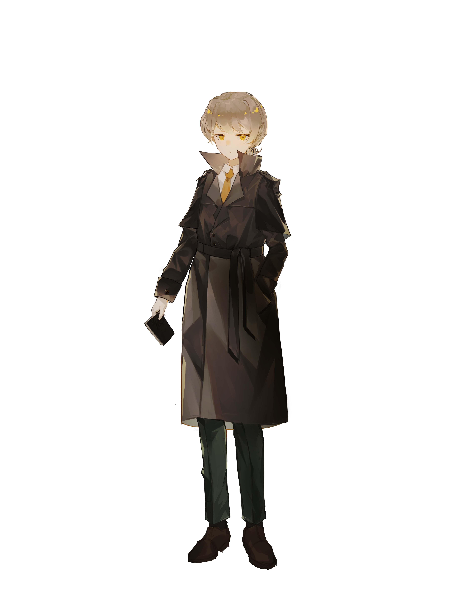
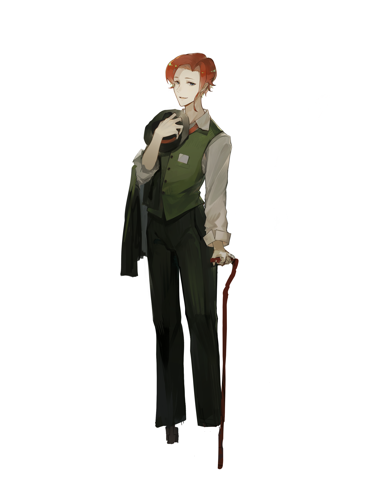

My Works
- 
- 
- 
-

-

-

Profile
Unon –currently living in Toronto,
Graduated From OCAD University, starting activating as a freelance illustrator from 2023.
Currently working on an individual game developing project named Mistery Detective.
Favored in “Vintage design” , “Historical element”, “Horror cute” .
Character design, SD illustrations for goods, collaboration with copyrighted works, advertising illustrations, key visuals, game concept art, etc. Active in a wide range of genres.
Favorites: Tea/Chocolate/Dessert/Jazz/Antique/Retro/Cups/Cats
Contact Email:Unon2528@gmail.com
Twitter: @Unon_0v0